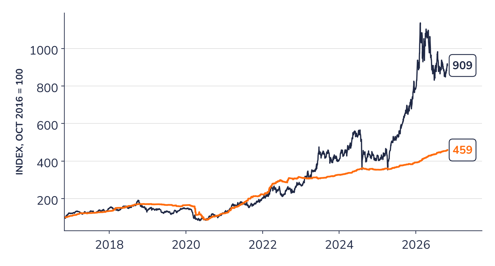
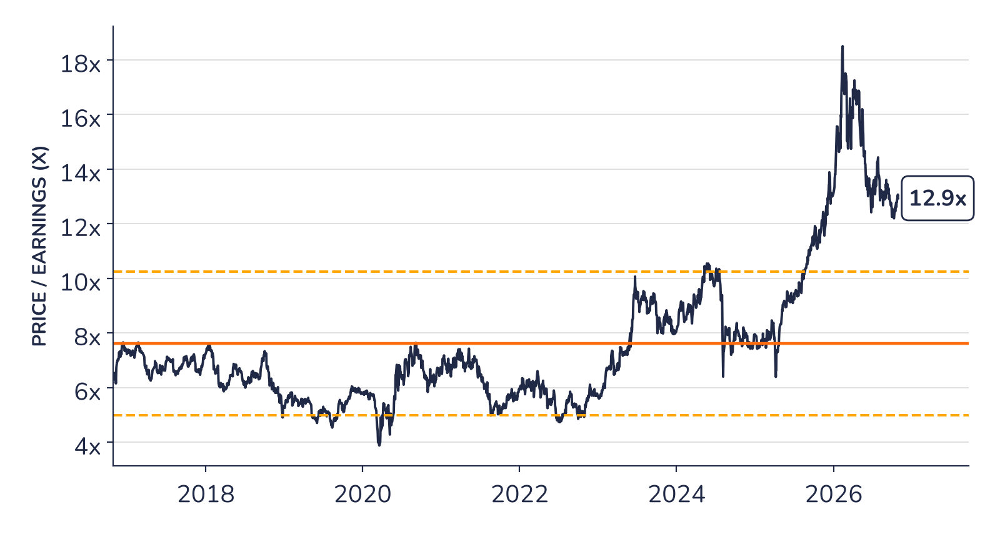

Ad-hoc opinion · Japanese trading houses
Chart 1 · 8002 JP: share price and consensus earnings
Share price and 12-month forward consensus earnings per share, both rebased to 100 in October 2016

Share price
Up about nine times in ten years
Consensus EPS
Up about 4.6 times over the same period
Source: Syz Research, Bloomberg, Company data
Chart 2 · 8002 JP: valuation against its own history
Price to 12-month forward consensus earnings, with the 10-year average and one standard deviation either side

Forward P/E
12.9x today, down from 18.5x in February
10-year average
7.6x
+/- 1 standard deviation
5.0x to 10.2x
Source: Syz Research, Bloomberg, Company data
Chart 1 shows how the share price has outrun earnings since 2023, as investors began to pay a higher multiple for the trading houses. Chart 2 shows the size of that re-rating and its partial reversal since February. At 12.9 times, the share trades above the upper band of its 10-year history, a premium that rests on higher returns on equity, larger buybacks and a steadier earnings mix than in the past.